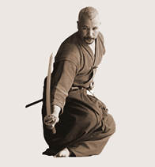
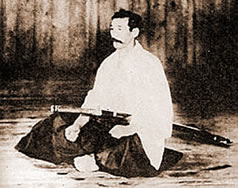
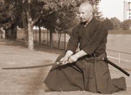
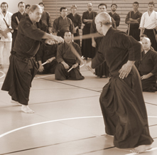
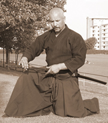

|
IAIDO - A JAPÁN KARD ÚTJAAz IAIDO, a japán kard mûvészete, az egykori szamurájok fõ tana, a kardrántással egyidejû vágás gyakorlata. Az IAIDO a spontán és természetes mozdulatok mûvészete, amelyet egyedül, saját magunkkal szemben gyakorlunk, KATÁ-k (rögzített mozdulatsorok) formájában. Az IAIDO történeteEzt a tant, amely olyan régi, mint maga a japán kard, elõször harcmûvészetként gyakorolták. A BUSHI-k (japán harcosok) idejében a kardrántás gyorsasága, ereje és pontossága gyakran meghatározta a harc kimenetelét. Azonban az Edo korban (1600-1868), amikor az ország relatív békében élt, ennek a gyakorlásnak a célja spirituálissá vált, és a kardforgatás fokozatosan egy ügyességi és önfegyelmi gyakorlat lett, amelyet IAIDO-nak neveztek. Az IAIDO pontosan meghatározott mozdulatsorokból áll, melyeknek a fõ célja az egyén belsõ fejlõdésének elõsegítése és kifejezése. Mivel az egyének egymástól mind különbözõek, így az IAIDO-ban a versengés teljesen kizárt. Ma több iskola létezik, amelyek közül egyesek még ma is õrzik harci jellegüket. A legnépszerûbb a MUSO SHINDEN RYU IAIDO iskola, amely még ma is nagyszerû bevezetést nyújt a kard mûvészetébe, és ezen felül egy teljes körû nevelési módszert ad a tanulónak. Az iskolát a híres HAKUDO Nakayama mester újította fel. Az IAIDO alapelveiAz I-AI-DO szó szerint: "a harmonikus lét útja" -, mint minden BUDO harcmûvészet, a test és a szellem tökéletes összhangjára helyezi a hangsúlyt. Az IAIDO KATÁ-kat egyedül gyakoroljuk. A saját testünk és szellemünk tökéletes ellenõrzése tagadhatatlanul az IAIDO nélkülözhetetlen összetevõjét képezik. Az a tény, hogy valódi pengével (KATANÁval) is gyakorolhatunk, amely borotvaéles, ezt a nemes tant egy vonzó precíziós gyakorlattá teszi. Az etikett, a türelem, az emberi lény tökéletes összhangja, a belsõ erõ, az alázatosság szintén meghatározóak ebben a tanulási folyamatban. Az IAIDO technikáiBár a KATÁ-k (elõre rögzített formagyakorlatok) képezik az IAIDO gyakorlás fõ részét, a kezdõ tanítvány is hamar találkozni fog az IAIDO két másik oldalával: a SOTAI gyakorlással, amely BOKKEN-nel, vagyis fából készült karddal végzett páros vívógyakorlatok sorozata, illetve a TAMESHIGIRI-vel, amely éles karddal végzett vágógyakorlat. Az IAIDO minden mozdulatában négy fõ fázist különböztethetünk meg:
A technikákat állva, illetve két elég nehéz ülõ pozícióban végezzük, SEIZÁ-ban (mindkét térd a földön) és TATEHIZÁ-ban (az egyik térd a földön, a másik felemelve). Az IAIDO technikák intenzív és kevéssé megszokott koncentrációt fejlesztenek ki. Semmilyen lényeges ellenjavallata nincsen ennek a versenyektõl mentes tannak. Ez a gyakorlási forma igen népszerû a japán iparosok és üzletemberek körében a belsõ fejlõdés elõsegítésére. Iai gyakorlás a Soproni Meishin dojóban Jaff Raji vezetésével:
* Iskolánk tanárai az Európai Iai Szövetség (FEI) tagjai. >>Az Európai Iai Szövetség technikai útmutatása Jaff Raji a FEI technikai vezetõségének Kuden fokozatú tagja, illetve Muso Jikiden Eishin Ryu Komei Juku Menkyo fokozatú instruktora. Hétvégi tábor Sekiguchi Komei Senseiel, a Muso Jikiden Eishin Ryu 21. Sokéjával:
* * Felszerelés: fehér vagy kék keiko gi, hakama (hagyományos hajtogatott japán nadrág), IAI-TO (élezetlen gyakorlókard), bokken (fakard) * A szöveg a Jaff Raji honlapján található francia eredeti alapján készült. A magyar szöveget készítették: Vincze Gábor és Gollob Szabolcs. Az Európai IAI Szövetség honlapja: * További információ és jelentkezés:info@rajibudoiskola.huTelefon: 06 70 225 3505* KÖNYV: * Videóink: Fotóalbumok:
|
| Tenjinchi Dojo | EBR International | Raji Ukemi Fitness | Aikido | Jodo | Iaido | Gyerekcsoport | Órarend | Tanárok Hírek/Események | Fotók / Videók | Olvasnivaló | Linkek |